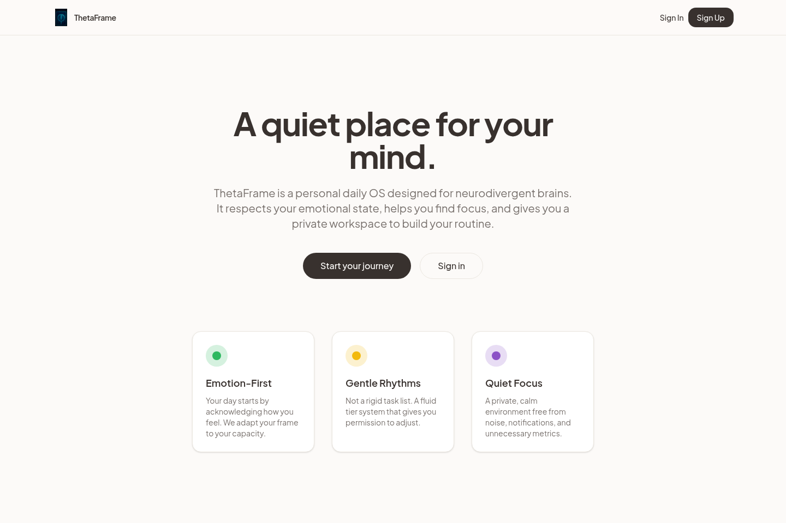
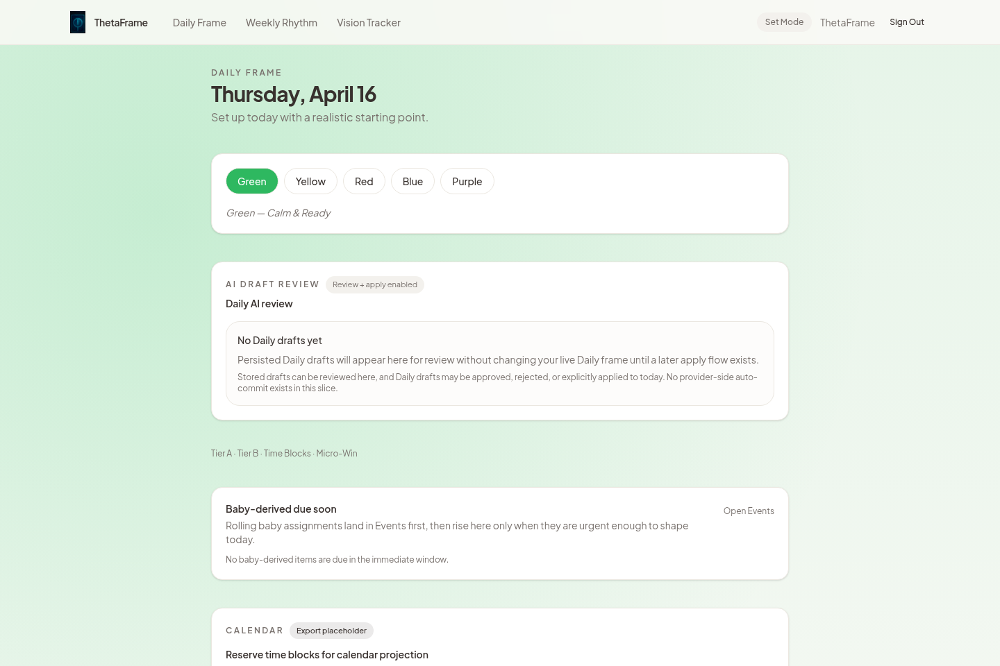
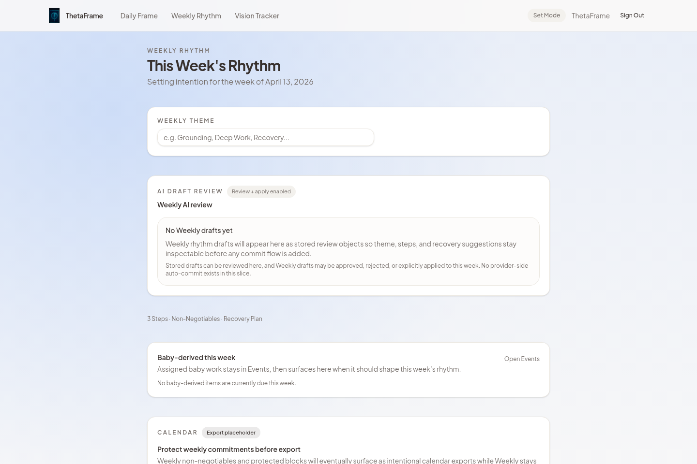
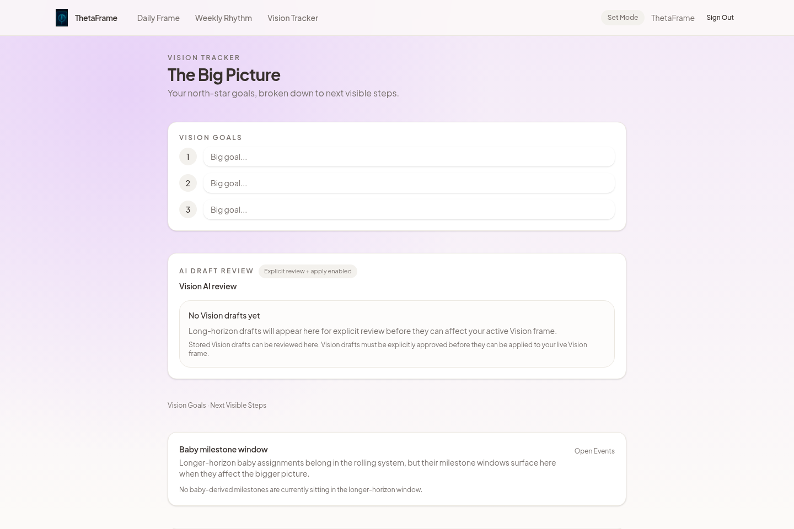
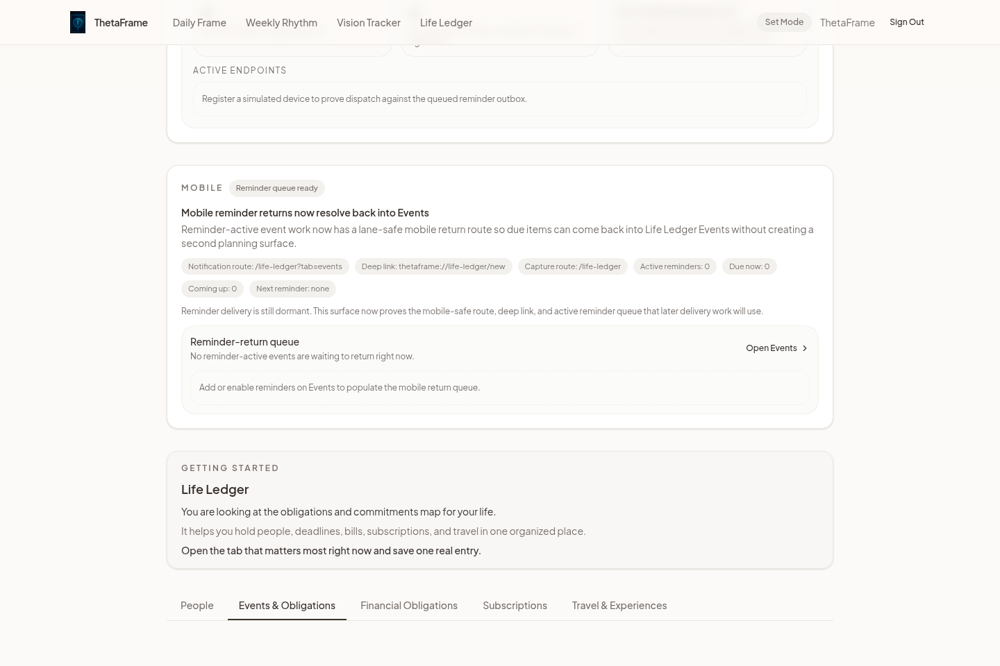
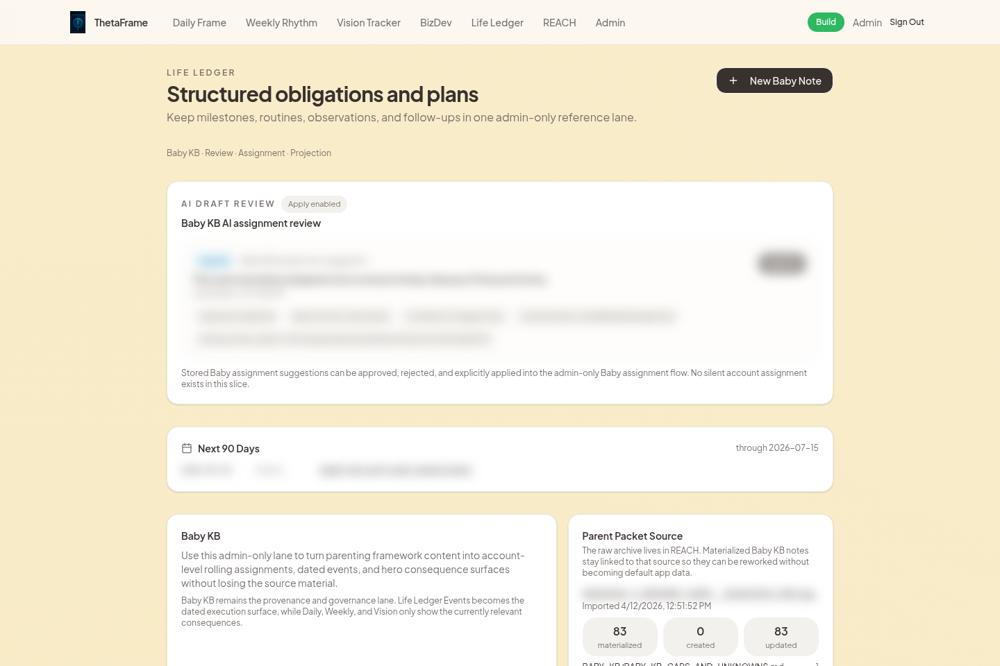

ThetaFrame New-User Explainer
Five real product slides for a 60-90 second walkthrough.
ThetaFrame gives the week a calm operating system.
The app is organized around lanes. Each lane has one job, so users can move from orientation to action without turning the product into a noisy dashboard.

Basic starts with Daily, Weekly, and Vision.
Basic users get the planning spine by default: today, the week, and the longer view. The AI assistant remains scoped to the lanes the user can access.



Advanced lanes are assigned intentionally.
Life Ledger is an example of a Select Authorized lane. It can hold dated obligations and reminders, but it only appears when Admin assigns that access.

AI creates drafts. People approve changes.
High-risk data does not silently change. AI-generated suggestions land in review surfaces first, then an allowed user approves, rejects, or applies them.

Access levels keep the app private and controlled.
The product can grow without making every feature visible to every account. Admin sees everything, Select Authorized gets assigned lanes, and Basic stays focused.